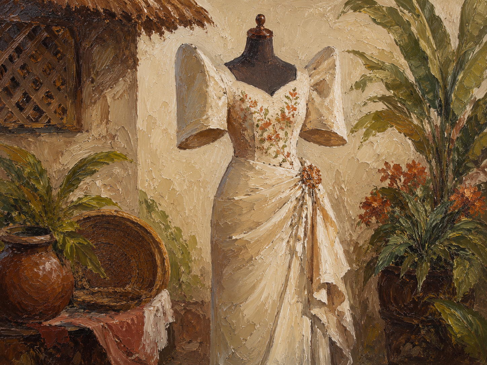
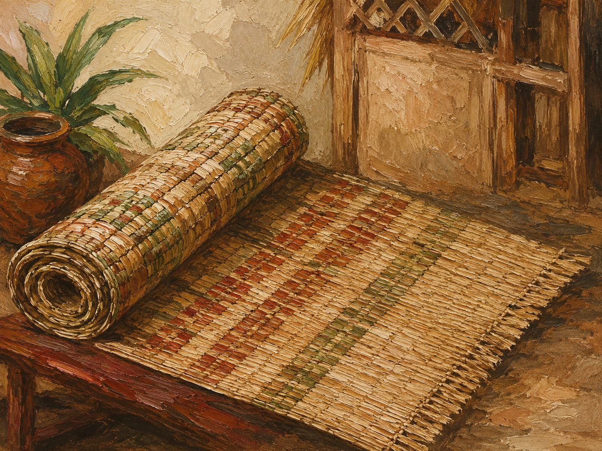
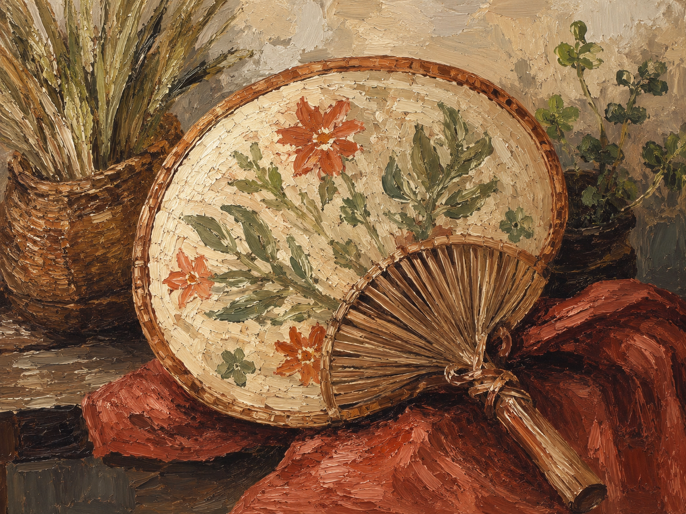
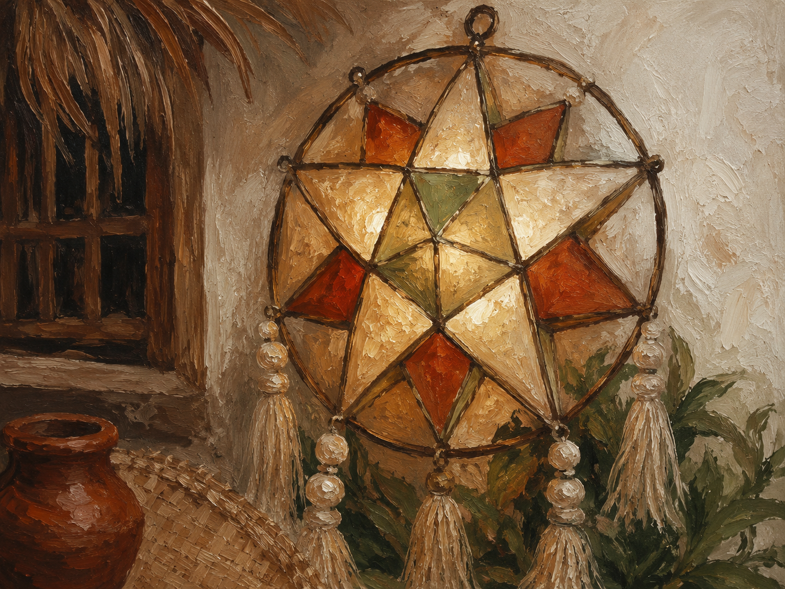
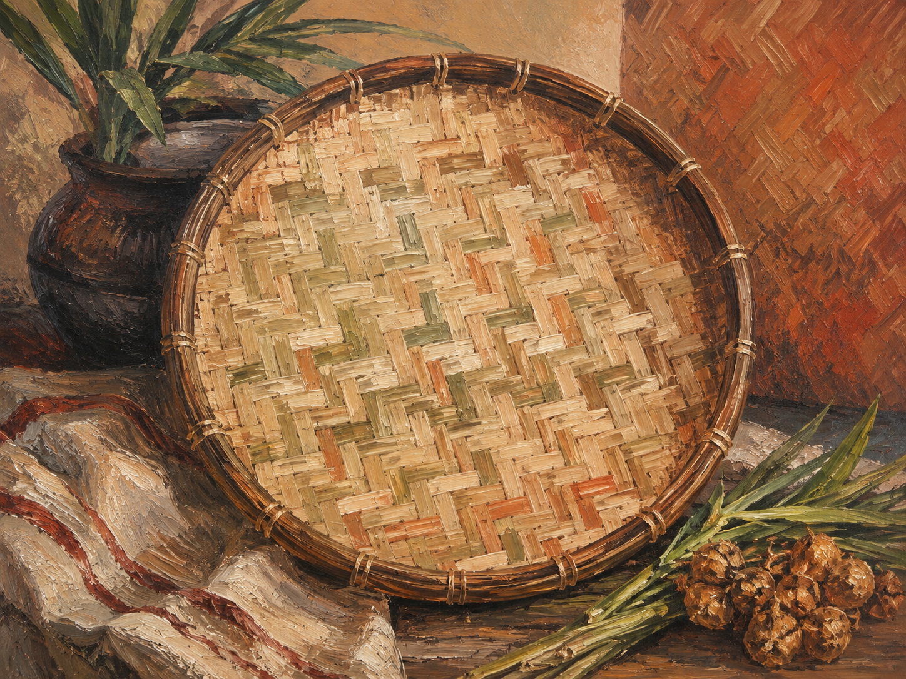

Maligayang Pagdating sa Ninuno
Maligayang Pagdating sa Ninuno
Tuklasin ang mga produktong nagpapakita ng galing, @@ -143,271 +180,307 @@
Maligayang Pagdating sa Ninuno
Aming Mga Produkto
Aming Mga Produkto
Barong Tagalog | |||
|
₱1,499 Barong TagalogBumili NgayonIsang tradisyunal na kasuotang Pilipino na karaniwang isinusuot sa mga pormal na okasyon, kasal, at mahahalagang pagdiriwang. |
|||
FilipinianaFilipinianaIsang eleganteng kasuotang Pilipina na kilala sa makasaysayang disenyo at natatanging manggas na sumasalamin sa kulturang Pilipino. Isang eleganteng kasuotang Pilipina na kilala sa makasaysayang disenyo at natatanging manggas na sumasalamin sa kulturang Pilipino. ₱1,799 ₱1,799 Bumili Ngayon Bumili Ngayon |

 |
||
|
Magaan at matibay na tsinelas na gawa mula sa hibla ng abaca, isang likas na materyal na kilala sa Pilipinas. Tsinelas na Abaca₱399 Magaan at matibay na tsinelas na gawa mula sa hibla ng abaca, isang likas na materyal na kilala sa Pilipinas. Bumili Ngayon₱399 |
Bumili Ngayon
|||
BanigIsang tradisyunal na hinabing sapin na gawa mula sa mga likas na materyales at kilala sa makukulay nitong disenyo. | |||
Bumili Ngayon
Banig |
₱650  Bumili Ngayon
Bumili Ngayon
|
 | |
Abaniko (Pamaypay)
Isang tradisyunal na pamaypay na ginagamit upang magbigay-ginhawa sa mainit na panahon at maaari ring magsilbing magandang palamuti. |
|||
|
 Parol na Capiz |
|||
Bilao |
Isang tradisyunal na bilog na sisidlan na gawa sa hinabing kawayan at karaniwang ginagamit sa paghahain o paghahanda ng pagkain.  ₱300 |
Bumili Ngayon

|
|


Bilao
Isang tradisyunal na bilog na sisidlan na gawa sa hinabing kawayan at karaniwang ginagamit sa paghahain o paghahanda ng pagkain.
₱300
Bumili Ngayon
Makipag-ugnayan sa Amin
Makipag-ugnayan sa Amin
Interesado sa aming mga produkto? @@ -420,24 +493,32 @@